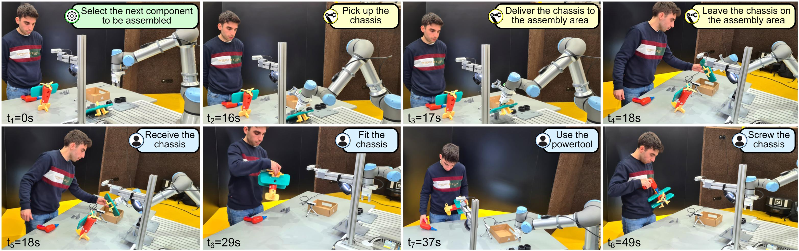
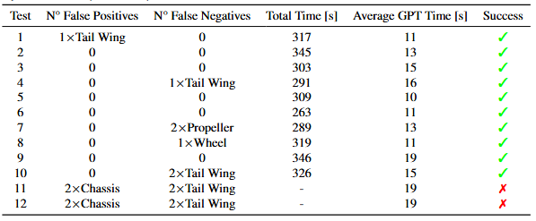

D-RMGPT: System Overview
Detection-Robot Management GPT (D-RMGPT): an adaptable robot-assisted planner based on embedded knowledge of off-the-shelf GPT-4 and GPT- 4Vision (now substituted with GPT-4o). This system is designed to assist inexperienced operators in human-robot collaborative tasks without requiring any markers or prior local training.
One Framework, Multiple Scenarios, Versatility Ensured
Product Assembly
Food Preparation
D-RMGPT Tests and Evaluations
D-RMGPT has been evaluated with 2 different human-robot collaboration scenarios: Product Assembly and Food Preparation.
Product Assembly
The aircraft toy assembly scenario emphasizes the system's ability to detect highly specific and complex components within a scene using an appropriately tailored image prompt. A robust environment perception is a fundamental prerequisite for building any task-planning system.
Food Preparation
The food preparation scenario highlights the system's adaptability and its ability to suggest the correct robot action for any workflow, from simple to complex processes. Operators can personalize tasks using intuitive inputs like voice commands or images, ensuring seamless collaboration tailored to their preferences.

Productc Assembly Process Examples
Assembly process followed by an inexperienced operator.
Assembly process followed by an experienced operator.
Example of failure of the system due to an incorrect detection.
D-MRGPT Performances
Test results inexperienced operator. In the 12 tests conducted with inexperienced operators, 10 were able to successfully complete the assembly, while 2 resulted in assembly failure due to a detection failure, achieving a success rate of 83%. For each test, the final completion time of the assembly, the average time required by the framework to suggest the next component for the operator to install, and any false positives and negatives detected in the detection process are reported.
Test results experienced operator. Three tests were conducted with experienced operators, who altered the assembly sequence differently each time to demonstrate the system's flexibility and ability to recover from unplanned situations. In all three tests, the operator successfully completed the assembly.

Detector comaparison with other VLM-based object detector systems. A comparison in terms of Precision and Recall metrics has been conducted between the DetGPT-V module and two other state-of-the-art object detectors for VLM-based object detection systems.
Process Customization and Adaptive Robot Planning The system was demonstrated to be capable in assisting the operator in producing a pizza from the chosen ingredients. The robot percepts its surroundings through cameras and is then able to assist the operator by providing the necessary tool/ingredient or by taking the right action to anticipate/support the operator in completing the task. A success rate of 86% in completing the pizza preparation task is achieved.
Process Customization and Adaptive Robot Planning with Changed Order Sequence 8 tests have been performed where the operators did not follow the suggested sequence of ingredient delivery, instead modifying the order or using two ingredients simultaneously. For example, while the robot delivered one ingredient, the operator would retrieve a different one from the warehouse and proceed to use it. The aim of these tests is to evaluate the framework’s ability to adapt to operator decisions. Among the eight tests performed, only one resulted in a failure.
Assembly Product Performances Improvements thanks to D-RMGPT
A comparison is provided between the time required by inexperienced operators who have never seen the aircraft product before and assemble it using the D-RMGPT framework, and other operators with the same knowledge level (no prior knowledge) who assemble the aircraft in a traditional manner, following the instruction manual provided by the manufacturer. 20 different operator testers have been involved: 10 for D-RMGPT assisted assembly and 10 for manual assembly.
The average time in case with D-RMGPT is equal to 310.8 s and it is 33.4% lower than the average time required with a manual assembly approach equal to 466.8 s. From the standard deviation is clear visible that the right case has less variations in time required.